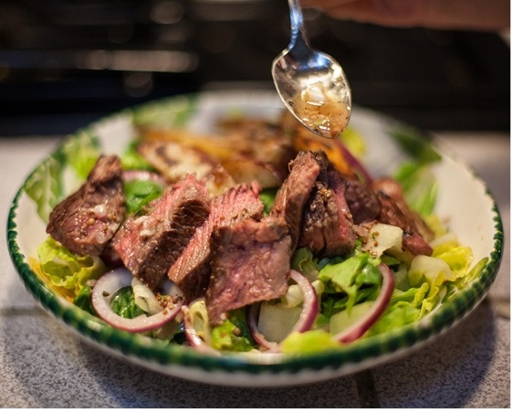
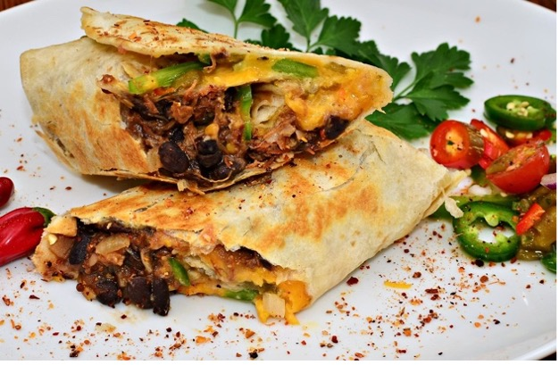
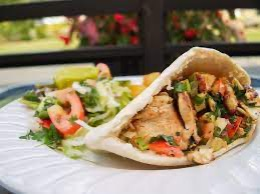
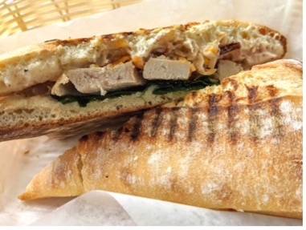

Soak red onion in cold water for 5 minutes; drain.
Combine mayonnaise, yogurt, vinegar, honey, salt, and pepper, stirring well with a whisk. Stir in red onion, broccoli almonds, dried cranberries, and bacon. Cover and chill 1 hour before serving.
Steak Taco Salad
Ingredients
1 (12 ounce) flank steak
Cooking spray
¾ teaspoon kosher salt
½ teaspoon black pepper
2 teaspoons olive oil
¾ cup chopped white onion
½ cup unsalted chicken stock
1 (15 ounce) can unsalted pinto beans, drained and rinsed
3 cups chopped romaine lettuce
1 ½ cups chopped tomato
Tortilla chips (as many as desired)
1 ripe avocado, thinly sliced
1 ½ ounces queso fresco, crumbled
Fresh cilantro leaves (optional)
4 lime wedges
Directions
Head a large skillet over medium-high heat. Spray steak on both sides with cooking spray and springle it with ¼ teaspoon salt and ¼ teaspoon pepper. Add to pan and cook 5 minutes on each side or until desired color. Place on a cutting board and let sit for 5 minutes. Cut across the grain into slices.
Add oil to pan, swirl to coat. Add onion, sauté 2 minutes. Add ¼ teaspoon salt, stock, and beans to pan; bring to a boil. Cook 4 minutes, scraping pan to loosen browned bits.
Place lettuce in bowls. Top evenly with bean mixture, steak, tomato, tortilla chips, and avocado. Sprinkle with remaining ¼ teaspoon salt, remaining ¼ teaspoon pepper, queso fresco, and, if desired, cilantro leaves. Serve with lime wedges.


Black Bean Queso Wraps
Ingredients
½ cup chopped red sweet pepper
¼ cup chopped poblano chile pepper
2 teaspoons canola oil
1/3 cup thinly sliced green onions
1/3 cup canned black beans, rinsed and drained
1/3 cup frozen whole-kernel corn, thawed
1/4 teaspoon freshly ground black pepper
2 tablespoons snipped fresh cilantro
2 tablespoons salsa verde
4 8-inch flour tortillas
1 cup shredded cheese
Directions
In a medium skillet cook sweet pepper and poblano pepper in hot oil over medium heat for 3 to 5 minutes or until crisp-tender, stirring occasionally. Remove from heat, and stir in beans, corn, cilantro, and salsa verde.
Place tortillas between paper towels and microwave on high for 20 to 40 seconds. Spoon bean mixture onto tortillas just below centers. Top with cheese and fold bottom edge of each tortilla up and over filling. Fold in opposite sides, roll up from the bottom, and lightly coat outsides of wraps with cooking spray.
Preheat a panini press. Place wraps in press, cover and cook for 2 to 3 minutes or until tortillas are toasted and filling is heated through.
Mediterranean Chicken Panini
Ingredients
Olive oil nonstick cooking spray
2 small skinless, boneless chicken breast halves (approximately 4 ounces each)
1/3 cup dried tomatoes (not oil-packed)
3 tablespoons boiling water
1/3 cup drained bottled roasted red sweet peppers
¾ cup chopped white onion
4 teaspoons balsamic vinegar
1 teaspoon snipped fresh oregano or ½ teaspoon dried oregano, crushed
1 large clove garlic, minced
1/8 teaspoon ground black pepper
8 slices of bread of choice
1 small zucchini
Directions
Lightly coat an unheated panini griddle or electric grill with nonstick cooking spray. Once it is heated, add the chicken, and close the lid for 6 to 7 minutes, or until chicken is no longer pink. Cool chicken slightly, cut each chicken piece in half horizontally and cut into small slices.
In a small bowl, combine dried tomatoes and boiling water. Cover and let sit for 5 minutes. Move undrained tomato mixture to a small food processor. Add roasted red sweet peppers, balsamic vinegar, oregano, large clove garlic, and ground black pepper. Cover and process until smooth.
Spread tomato spread on the pieces of bread, and place chicken on one slice of bread in each sandwich. Using a vegetable peeler, cut very thin strips from the zucchini. Place zucchini strips on top of the chicken and put the other slice of bread on top. Press down lightly and coat both sides of each sandwich with nonstick cooking spray.
Place sandwiches on the griddle or grill, and close the lid for 2 to 3 minutes or until the bread is toasted.


Chicken Pesto Panini
Ingredients
1 teaspoon dried oregano
½ teaspoon ground pepper
4 chicken breast cutlers (around 1 pound)
1 tablespoon extra-virgin olive oil
¼ cup refrigerated basil pesto
4 whole-grain sandwich thins OR 8 slices of bread of any kind
2 cups loosely packed baby arugula
4 jarred roasted red pepper strips, drained and patted dry
5 ounces fresh mozzarella cheese, sliced
Cooking spray
Directions
Combine oregano and pepper in a small bowl and sprinkle them over each side of the chicken. Heat oil in a large skillet
Spread pesto evenly over your choice of bread. Top the bottom halves evenly with arugula, chicken, roasted pepper and mozzarella; cover with top halves. Press down lightly.
Coat whatever you choose to cook the panini on lightly with cooking spray as well as both sides of the sandwiches. Lay the panini on the griddle or grill once it is heated up, and close the lid until the bread is toasted, which is usually about 3 to 4 minutes.